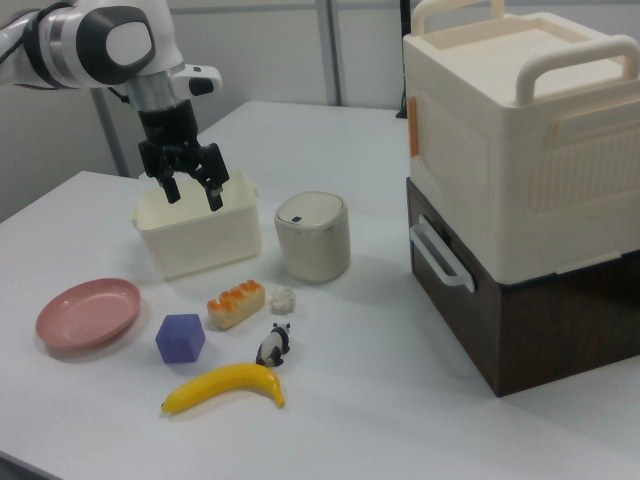

RoboMIND · franka_3rgb__place_in_bread_in_plate/1014_101240
Place in bread in plate

Annotation
From the dedicated visual review of this video (concise_action_v1). Plain text · JSON
Observed outcome
- Status
visually_completed
- Description
The gripper closes on the orange-topped bread slice on the table (frames 52-60), lifts and carries it left (64-98), lowers it onto the pink plate and opens the fingers (100-104). The slice rests on the plate from frame 104 through 159 while the arm lifts away and hovers above the cream tray.
Hand roles
- Active visible arm
Single arm grasps the bread slice, carries it to the pink plate, places it there, releases it and lifts away.
- Other arm
None.
Coordination
Single arm acts alone; no second arm, hand transfer or human interaction.
Robot-side evidence
- Visible description
Single Franka Emika Panda arm with a parallel-jaw gripper entering from the upper-left edge of the camera_right view. Only one arm exists.
- Source annotation
Publisher instruction: 'put the bread on a plate'.
- Visual certainty
Not a humanoid; left/right anatomy is not needed. The prompt refers to the single visible robotic arm.
Chronology
| Frames | Observation |
|---|---|
| 0–20 | Arm held above and left of a small cream open-top tray with gripper open and pointing down; the tabletop holds a pink plate at left, the orange-topped bread slice in the middle, a purple cube, a yellow banana, a small panda figurine and a small white crumpled item. Arm nearly static. |
| 22–38 | Arm swings right and down toward the bread slice, wrist turning; gripper still open and stays above the tray rim then in front of it. |
| 40–50 | Gripper lowers over the bread slice (blue wrist light visible), fingers straddling the slice; gripper telemetry still 0. |
| 52–62 | Fingers close on the bread slice (gripper telemetry rises 0.03 at 52, 0.44 at 56, 0.69 at 60); slice held between the fingers (frames 56, 64 at native resolution). |
| 64–78 | Arm lifts the held slice and moves it up and to image left; the slice passes briefly over the cream tray (about frames 70-76) without being released there; the slice remains in the gripper. |
| 80–98 | Arm carries the slice left and down toward the pink plate at image left; slice still held (gripper telemetry about 0.68 to 0.60). |
| 100–106 | Slice is lowered onto the pink plate; gripper telemetry falls from 0.35 at 100 to 0 at 104 as the fingers open; slice rests on the plate by 104-106 (native frames 98, 104, 106). |
| 108–126 | Gripper open and clear of the slice; arm lifts and moves back up and to image right away from the plate. The slice stays on the plate. |
| 128–159 | Arm hovers and drifts above the cream tray with open gripper, not touching anything; bread slice remains on the pink plate to the end (native frames 130, 159). |
Clip selection
The episode is one single-task clip (pick up the bread slice, place it on the plate, release and withdraw), with no independent subtasks, so the complete clip is kept. The release at about frames 100-104 and the withdrawal to frame 159 are the ordinary end of the same placement.
Differences from the publisher annotation
- The folder name says 'place_in_bread_in_plate' and the instruction 'put the bread on a plate'; the video matches the instruction. The only detail added is that the plate is pink and the slice is picked up from the open tabletop, not from the cream tray the arm initially hovers above.
Uncertainties
- The bread is a toy-like orange-topped slice (appearance of a bread or cake slice); the prompt calls it 'slice of bread' following the publisher instruction and its appearance.
- The exact finger contact points on the slice are not resolvable at 640x480; the grasp is established from the gripper telemetry rising while the slice moves with the gripper.
- Gripper telemetry polarity (higher value = more closed) was inferred from video and used only as supporting evidence.
- The slice's final orientation on the plate is slightly tilted but fully on the plate rim region; it is not touching the table.
- FPS is not recorded in the source; frame indices are authoritative, not time.
Complete review record action_review.json
{
"prompt_protocol": "concise_action_v1",
"prompt_provenance": "visually_authored_from_video_and_initial_frame",
"dataset": "x-humanoid-robomind/RoboMIND",
"task": "place_in_bread_in_plate",
"episode_id": "1014_101240",
"embodiment": "franka_3rgb",
"generation_camera": "camera_right",
"source_video": "../../original/data/trajectory.hdf5",
"source_frame_count": 160,
"source_resolution": [
640,
480
],
"source_fps": null,
"source_fps_note": "FPS is not recorded in the source HDF5; 30 FPS is only a nominal playback rate, so no real-time durations are claimed.",
"selected_source_frame_start": 0,
"selected_source_frame_end_exclusive": 160,
"selected_frame_count": 160,
"selection_reason": "The episode is one single-task clip (pick up the bread slice, place it on the plate, release and withdraw), with no independent subtasks, so the complete clip is kept. The release at about frames 100-104 and the withdrawal to frame 159 are the ordinary end of the same placement.",
"usable_prompt": "The robotic arm picks up the slice of bread from the table and places it on the pink plate, then releases it and lifts away. Keep the camera fixed; preserve robot geometry, physically valid joint motion, and normal gripper opening and closing.",
"full_sequence_prompt": null,
"selected_action_outcome": {
"status": "visually_completed",
"description": "The gripper closes on the orange-topped bread slice on the table (frames 52-60), lifts and carries it left (64-98), lowers it onto the pink plate and opens the fingers (100-104). The slice rests on the plate from frame 104 through 159 while the arm lifts away and hovers above the cream tray."
},
"source_overall_outcome": {
"status": "visually_completed",
"source_quality_label": null,
"description": "Same as the selected clip: the bread slice ends resting on the pink plate; no other object is moved. No success/failure label is stored in the source beyond the language instruction."
},
"anatomical_side_evidence": {
"visible_description": "Single Franka Emika Panda arm with a parallel-jaw gripper entering from the upper-left edge of the camera_right view. Only one arm exists.",
"source_annotation": "Publisher instruction: 'put the bread on a plate'.",
"visual_certainty": "Not a humanoid; left/right anatomy is not needed. The prompt refers to the single visible robotic arm."
},
"arm_roles": {
"active_visible_arm": "Single arm grasps the bread slice, carries it to the pink plate, places it there, releases it and lifts away.",
"other_arm": "None."
},
"coordination": "Single arm acts alone; no second arm, hand transfer or human interaction.",
"chronology": [
{
"source_frames_inclusive": [
0,
20
],
"observation": "Arm held above and left of a small cream open-top tray with gripper open and pointing down; the tabletop holds a pink plate at left, the orange-topped bread slice in the middle, a purple cube, a yellow banana, a small panda figurine and a small white crumpled item. Arm nearly static."
},
{
"source_frames_inclusive": [
22,
38
],
"observation": "Arm swings right and down toward the bread slice, wrist turning; gripper still open and stays above the tray rim then in front of it."
},
{
"source_frames_inclusive": [
40,
50
],
"observation": "Gripper lowers over the bread slice (blue wrist light visible), fingers straddling the slice; gripper telemetry still 0."
},
{
"source_frames_inclusive": [
52,
62
],
"observation": "Fingers close on the bread slice (gripper telemetry rises 0.03 at 52, 0.44 at 56, 0.69 at 60); slice held between the fingers (frames 56, 64 at native resolution)."
},
{
"source_frames_inclusive": [
64,
78
],
"observation": "Arm lifts the held slice and moves it up and to image left; the slice passes briefly over the cream tray (about frames 70-76) without being released there; the slice remains in the gripper."
},
{
"source_frames_inclusive": [
80,
98
],
"observation": "Arm carries the slice left and down toward the pink plate at image left; slice still held (gripper telemetry about 0.68 to 0.60)."
},
{
"source_frames_inclusive": [
100,
106
],
"observation": "Slice is lowered onto the pink plate; gripper telemetry falls from 0.35 at 100 to 0 at 104 as the fingers open; slice rests on the plate by 104-106 (native frames 98, 104, 106)."
},
{
"source_frames_inclusive": [
108,
126
],
"observation": "Gripper open and clear of the slice; arm lifts and moves back up and to image right away from the plate. The slice stays on the plate."
},
{
"source_frames_inclusive": [
128,
159
],
"observation": "Arm hovers and drifts above the cream tray with open gripper, not touching anything; bread slice remains on the pink plate to the end (native frames 130, 159)."
}
],
"uncertainties": [
"The bread is a toy-like orange-topped slice (appearance of a bread or cake slice); the prompt calls it 'slice of bread' following the publisher instruction and its appearance.",
"The exact finger contact points on the slice are not resolvable at 640x480; the grasp is established from the gripper telemetry rising while the slice moves with the gripper.",
"Gripper telemetry polarity (higher value = more closed) was inferred from video and used only as supporting evidence.",
"The slice's final orientation on the plate is slightly tilted but fully on the plate rim region; it is not touching the table.",
"FPS is not recorded in the source; frame indices are authoritative, not time."
],
"source_annotation_discrepancies": [
"The folder name says 'place_in_bread_in_plate' and the instruction 'put the bread on a plate'; the video matches the instruction. The only detail added is that the plate is pink and the slice is picked up from the open tabletop, not from the cream tray the arm initially hovers above."
],
"inspection_coverage": {
"entire_sequence_reviewed": true,
"sampled_decoded_frame_indices": [
0,
2,
4,
6,
8,
10,
12,
14,
16,
18,
20,
22,
24,
26,
28,
30,
32,
34,
36,
38,
40,
42,
44,
46,
48,
50,
52,
54,
56,
58,
60,
62,
64,
66,
68,
70,
72,
74,
76,
78,
80,
82,
84,
86,
88,
90,
92,
94,
96,
98,
100,
102,
104,
106,
108,
110,
112,
114,
116,
118,
120,
122,
124,
126,
128,
130,
132,
134,
136,
138,
140,
142,
144,
146,
148,
150,
152,
154,
156,
158
],
"sampling_method": "Every second decoded frame of camera_right (frames 0-158) in sequential temporary contact sheets covering the complete 160-frame source, plus native-resolution frames at the grasp, carry, release and end.",
"native_resolution_frame_indices": [
0,
44,
56,
64,
72,
84,
98,
104,
106,
112,
130,
159
],
"conditioning_png_inspected_after_sequence": true,
"conditioning_png": "../first_frame.png",
"temporary_evidence_location": "/tmp/rv_review/robomind_1014_101240 (not a dataset artifact)",
"ancillary_camera_videos_used": false,
"telemetry_used": "puppet/joint_position gripper column sampled every 4 frames from 44 to 108 as supporting evidence only."
},
"evidence_frame_indices": [
0,
44,
56,
64,
72,
84,
98,
104,
106,
112,
130,
159
],
"review_completed_at": "2026-10-15T20:05:41Z",
"dedicated_review_agent": "review_robomind_1014_101240",
"generation_reference_validation": {
"source_frame_start": 0,
"source_frame_end_exclusive": 160,
"frame_count": 160,
"lossless_source_frame_correspondence_passed": true,
"original_source_hdf5_retained_unchanged": true
}
}